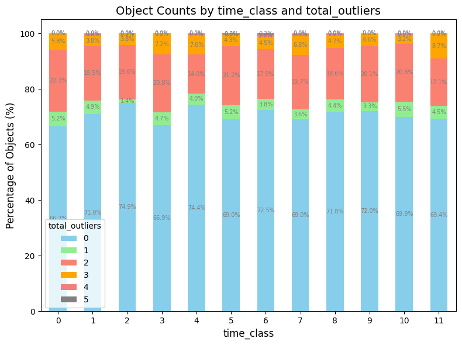
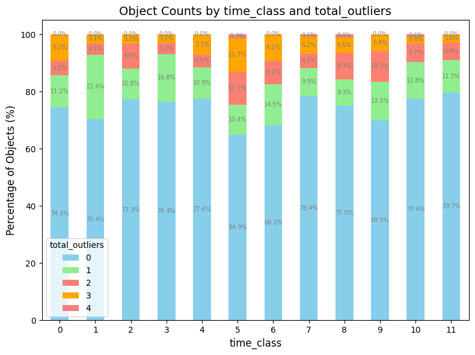
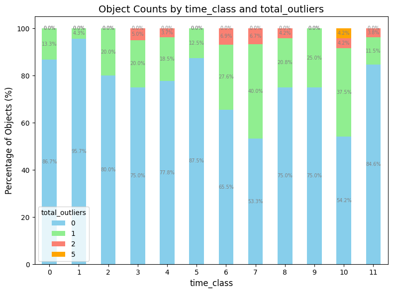

4. Quality Metrics#
Import Libraries
import geopandas as gpd
import matplotlib.pyplot as plt
Reading Data
lines_gdf_stat = gpd.read_file('data/2_lines_gdf_stat.gpkg')
lines_gdf_cars = lines_gdf_stat[lines_gdf_stat['object_type'] =='CAR']
lines_gdf_pedestrians = lines_gdf_stat[lines_gdf_stat['object_type'] =='PEDESTRIAN']
lines_gdf_two_wheelers = lines_gdf_stat[lines_gdf_stat['object_type'] =='CYCLIST']
Based on this cahracteristics we can distinguish statistical outliers and use it as a data quality metrics
def detect_outliers(df, columns):
# Create a copy of the DataFrame to avoid modifying the original
df_outliers = df.copy()
for col in columns:
# Calculate Q1 (25th percentile) and Q3 (75th percentile) for the column
Q1 = df_outliers[col].quantile(0.25)
Q3 = df_outliers[col].quantile(0.75)
# Calculate IQR (Interquartile Range)
IQR = Q3 - Q1
# Determine outlier boundaries
lower_bound = Q1 - 1.5 * IQR
upper_bound = Q3 + 1.5 * IQR
# Create a new field indicating outliers
outlier_field = f"{col}_outlier"
df_outliers[outlier_field] = ((df_outliers[col] < lower_bound) | (df_outliers[col] > upper_bound)).astype(int)
# Calculate the sum of outliers for each row
outlier_columns = [f"{col}_outlier" for col in columns]
df_outliers['total_outliers'] = df_outliers[outlier_columns].sum(axis=1)
return df_outliers
columns_to_check = ['total_time', 'avg_v', 'avg_width', 'avg_height', 'avg_length', 'route_length', 'distance_first_last']
cars_outliers = detect_outliers(lines_gdf_cars, columns_to_check)
cars_outliers.head()
| object_id | total_time | avg_heading | avg_v | avg_width | avg_length | avg_height | object_type | time_class | avg_heading_change | ... | direct_real_d_ratio | geometry | total_time_outlier | avg_v_outlier | avg_width_outlier | avg_height_outlier | avg_length_outlier | route_length_outlier | distance_first_last_outlier | total_outliers | |
|---|---|---|---|---|---|---|---|---|---|---|---|---|---|---|---|---|---|---|---|---|---|
| 0 | 152997118 | 286302 | 133.7800 | 0.03 | 1.869 | 4.387 | 1.151 | CAR | 0 | 0.065886 | ... | 623.585910 | LINESTRING (13.06440 47.81014, 13.06441 47.810... | 1 | 0 | 0 | 0 | 0 | 0 | 0 | 1 |
| 2 | 152997182 | 270701 | 139.9335 | 0.02 | 1.912 | 4.523 | 1.690 | CAR | 0 | -0.068684 | ... | 698.199732 | LINESTRING (13.06413 47.81005, 13.06413 47.810... | 1 | 0 | 0 | 0 | 0 | 0 | 0 | 1 |
| 3 | 152997183 | 101799 | 105.4660 | 0.01 | 1.872 | 4.867 | 1.566 | CAR | 0 | -0.081633 | ... | 1.208331 | LINESTRING (13.06339 47.80977, 13.06339 47.809... | 0 | 0 | 0 | 0 | 0 | 0 | 0 | 0 |
| 4 | 152997184 | 100897 | 97.4585 | 0.01 | 1.974 | 5.000 | 1.615 | CAR | 0 | -0.053851 | ... | 1.299410 | LINESTRING (13.06339 47.80978, 13.06340 47.809... | 0 | 0 | 0 | 0 | 0 | 0 | 0 | 0 |
| 7 | 152997753 | 109398 | 34.2955 | 0.04 | 2.227 | 5.777 | 2.422 | CAR | 0 | 0.225113 | ... | 2.013326 | LINESTRING (13.06394 47.80935, 13.06394 47.809... | 0 | 0 | 1 | 0 | 1 | 0 | 0 | 2 |
5 rows × 29 columns
# Calculate the counts and percentages of each combination of time_class and total_outliers
counts = cars_outliers.groupby(['time_class', 'total_outliers']).size().reset_index(name='count')
total_counts = counts.groupby('time_class')['count'].transform('sum')
counts['percentage'] = (counts['count'] / total_counts) * 100
# Pivot the data to prepare for plotting
pivot_counts = counts.pivot(index='time_class', columns='total_outliers', values='percentage').fillna(0)
# Plotting
colors = ['skyblue', 'lightgreen', 'salmon', 'orange', 'lightcoral', 'gray'] # Define additional colors
ax = pivot_counts.plot(kind='bar', stacked=True, color=colors, figsize=(8, 6))
# Add labels and title
ax.set_title('Object Counts by time_class and total_outliers', fontsize=14)
ax.set_xlabel('time_class', fontsize=12)
ax.set_ylabel('Percentage of Objects (%)', fontsize=12)
ax.legend(title='total_outliers', fontsize=10)
# Show percentages inside each bar segment
for i in range(pivot_counts.shape[0]):
total = pivot_counts.iloc[i].sum()
cum_sum = 0
for j in range(pivot_counts.shape[1]):
value = pivot_counts.iloc[i, j]
ax.text(i, cum_sum + value / 2, f'{value:.1f}%', ha='center', va='center', color='gray', fontsize=7)
cum_sum += value
plt.xticks(rotation=0)
plt.tight_layout()
plt.show()

Pedestrians#
columns_to_check = ['total_time', 'avg_v', 'avg_width', 'avg_height', 'avg_length', 'route_length', 'distance_first_last']
pedestrians_outliers = detect_outliers(lines_gdf_pedestrians, columns_to_check)
pedestrians_outliers.head()
| object_id | total_time | avg_heading | avg_v | avg_width | avg_length | avg_height | object_type | time_class | avg_heading_change | ... | direct_real_d_ratio | geometry | total_time_outlier | avg_v_outlier | avg_width_outlier | avg_height_outlier | avg_length_outlier | route_length_outlier | distance_first_last_outlier | total_outliers | |
|---|---|---|---|---|---|---|---|---|---|---|---|---|---|---|---|---|---|---|---|---|---|
| 1 | 152997181 | 138700 | 148.052 | 0.770 | 0.559 | 0.5585 | 1.3320 | PEDESTRIAN | 0 | -0.048435 | ... | 1.684016 | LINESTRING (13.06399 47.81006, 13.06399 47.810... | 1 | 0 | 0 | 0 | 0 | 1 | 1 | 3 |
| 5 | 152997343 | 108398 | 228.052 | 0.100 | 0.659 | 0.6375 | 1.0935 | PEDESTRIAN | 0 | -0.075645 | ... | 2.245971 | LINESTRING (13.06429 47.80957, 13.06429 47.809... | 1 | 0 | 0 | 0 | 0 | 0 | 0 | 1 |
| 6 | 152997466 | 115007 | 233.052 | 0.070 | 0.459 | 0.5000 | 1.4510 | PEDESTRIAN | 0 | -0.175439 | ... | 1.953137 | LINESTRING (13.06442 47.80944, 13.06441 47.809... | 1 | 0 | 0 | 0 | 0 | 1 | 1 | 3 |
| 8 | 152997836 | 109009 | 134.466 | 0.020 | 0.574 | 0.6820 | 1.2320 | PEDESTRIAN | 0 | -0.089454 | ... | 1.146090 | LINESTRING (13.06453 47.80964, 13.06453 47.809... | 1 | 0 | 0 | 0 | 0 | 1 | 1 | 3 |
| 9 | 152997959 | 116001 | 223.052 | 0.585 | 0.448 | 0.3850 | 1.1940 | PEDESTRIAN | 0 | 0.288462 | ... | 3.144418 | LINESTRING (13.06450 47.80986, 13.06451 47.809... | 1 | 0 | 0 | 0 | 0 | 1 | 0 | 2 |
5 rows × 29 columns
# Calculate the counts and percentages of each combination of time_class and total_outliers
counts = pedestrians_outliers.groupby(['time_class', 'total_outliers']).size().reset_index(name='count')
total_counts = counts.groupby('time_class')['count'].transform('sum')
counts['percentage'] = (counts['count'] / total_counts) * 100
# Pivot the data to prepare for plotting
pivot_counts = counts.pivot(index='time_class', columns='total_outliers', values='percentage').fillna(0)
# Plotting
colors = ['skyblue', 'lightgreen', 'salmon', 'orange', 'lightcoral'] # Define additional colors
ax = pivot_counts.plot(kind='bar', stacked=True, color=colors, figsize=(8, 6))
# Add labels and title
ax.set_title('Object Counts by time_class and total_outliers', fontsize=14)
ax.set_xlabel('time_class', fontsize=12)
ax.set_ylabel('Percentage of Objects (%)', fontsize=12)
ax.legend(title='total_outliers', fontsize=10)
# Show percentages inside each bar segment
for i in range(pivot_counts.shape[0]):
total = pivot_counts.iloc[i].sum()
cum_sum = 0
for j in range(pivot_counts.shape[1]):
value = pivot_counts.iloc[i, j]
ax.text(i, cum_sum + value / 2, f'{value:.1f}%', ha='center', va='center', color='gray', fontsize=7)
cum_sum += value
plt.xticks(rotation=0)
plt.tight_layout()
plt.show()

Two-Wheelers#
columns_to_check = ['total_time', 'avg_v', 'avg_width', 'avg_height', 'avg_length', 'route_length', 'distance_first_last']
two_wheelers_outliers = detect_outliers(lines_gdf_two_wheelers, columns_to_check)
# Calculate the counts and percentages of each combination of time_class and total_outliers
counts = two_wheelers_outliers.groupby(['time_class', 'total_outliers']).size().reset_index(name='count')
total_counts = counts.groupby('time_class')['count'].transform('sum')
counts['percentage'] = (counts['count'] / total_counts) * 100
# Pivot the data to prepare for plotting
pivot_counts = counts.pivot(index='time_class', columns='total_outliers', values='percentage').fillna(0)
# Plotting
colors = ['skyblue', 'lightgreen', 'salmon', 'orange', 'lightcoral'] # Define additional colors
ax = pivot_counts.plot(kind='bar', stacked=True, color=colors, figsize=(8, 6))
# Add labels and title
ax.set_title('Object Counts by time_class and total_outliers', fontsize=14)
ax.set_xlabel('time_class', fontsize=12)
ax.set_ylabel('Percentage of Objects (%)', fontsize=12)
ax.legend(title='total_outliers', fontsize=10)
# Show percentages inside each bar segment
for i in range(pivot_counts.shape[0]):
total = pivot_counts.iloc[i].sum()
cum_sum = 0
for j in range(pivot_counts.shape[1]):
value = pivot_counts.iloc[i, j]
ax.text(i, cum_sum + value / 2, f'{value:.1f}%', ha='center', va='center', color='gray', fontsize=7)
cum_sum += value
plt.xticks(rotation=0)
plt.tight_layout()
plt.show()
